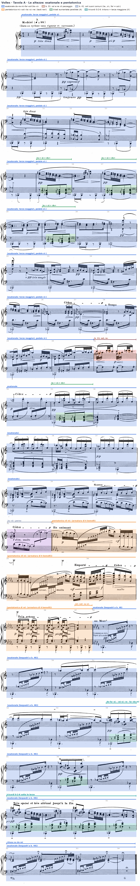

Bb. 1–6 · La prima frase: due linee esatonali in terze maggiori, poi il pedale

- ① b. 1: inciso 1: terze maggiori che scendono per toni
- ② b. 2: la♭–do / sol♯–do: la stessa terza, due grafie
- ③ b. 3: inciso 2: ripete l’inizio
- ④ b. 4: quarte diminuite (fa♯–si♭, mi–la♭): terze maggiori scritte altrimenti
- ⑤ bb. 5–6: chiusa sospesa su do–mi; entra il pedale (pp)
Voiles dura poco più di sessanta battute e non contiene una sola cadenza nel senso funzionale del termine: nessuna dominante, nessuna tonica, nessuna triade maggiore o minore nelle prime quarantun battute. Eppure la pagina si ascolta come un discorso ordinato, con un’esposizione, un episodio contrastante e una ripresa. Le funzioni che nella musica tonale spettano alla cadenza e alla modulazione sono qui distribuite su tre altri piani. La forma è segnata dal cambio di collezione (esatonale, pentatonica, di nuovo esatonale); il centro è affidato a un pedale di si♭, che sostituisce la tonica senza assumerne le funzioni; la continuità nasce da pochissime cellule (la terza maggiore, il passo di tono, la figura che oscilla attorno al la♭), sovrapposte in strati che occupano ciascuno un proprio registro e un proprio ritmo. La ripresa, infine, non ripete l’esposizione: la ricompone, cambiando proprio l’elemento che nelle battute iniziali dava colore all’armonia.
Le bb. 1–41 impiegano soltanto i sei suoni della scala per toni interi do–re–mi–fa♯–sol♯–la♯. Debussy non scrive mai la♯, sempre si♭; il quinto suono compare invece in due grafie, sol♯ e la♭, scelte secondo la convenienza di lettura. Già la b. 2 ne dà la prova più evidente: il bicordo la♭4–do5 è seguito, una biscroma più tardi, da sol♯5–do6, cioè dalle stesse classi di altezze un’ottava sopra, notate in altro modo. De la Motte osserva che la scrittura per toni interi non può rendere graficamente l’equidistanza dei sei suoni e che la stessa altezza viene annotata come sol♯ nella parte superiore e come la♭ in quella inferiore (Manuale di armonia, p. 322); Natoli ricava dallo stesso dettaglio che l’arabesco va letto come sovrapposizione di due scale esatonali e non come successione di terze (Percorsi di analisi musicale, p. 294). Per la stessa ragione numerose terze maggiori sono scritte come quarte diminuite (fa♯5–si♭5 alla b. 2, mi4–la♭4 alla b. 4), come nota anche Galli (Storia della musica 3, p. 228).
Il materiale melodico si riduce a tre profili. Il primo (motivo a) è l’arabesco delle bb. 1–2: due linee in terze maggiori parallele scendono per toni, sol♯5–fa♯5–mi5–re5 sopra mi5–re5–do5–si♭4, fino al la♭4–do5 della b. 2, poi saltano all’ottava superiore (sol♯5–do6) e si posano su fa♯5–si♭5. Le bb. 3–4 ripetono l’inciso e ne prolungano la discesa fino a re4–fa♯4, che sfocia nel do4–mi4 della b. 5. Alla b. 59, dove le stesse battute ritornano, il bicordo acuto è scritto la♭5–do6 e non più sol♯5–do6: la scelta fra le due grafie dipende dal contesto di lettura, non dall’altezza. Il secondo profilo (motivo b, pp expressif, b. 7) è uno spunto di tre suoni, la♭–si♭–do, raddoppiato all’ottava (la♭3–si♭3–do4 sopra la♭2–si♭2–do3) e fermo sul do tenuto della b. 8. Natoli lo definisce un’aumentazione per moto contrario dell’idea iniziale (p. 295): le terze scendono per toni in biscrome, lo spunto sale per toni in crome. Il terzo profilo (figura c, pp très souple, b. 22) è una volatina di quattro biscrome, la♭4–si♭4–la♭4–fa♯4, che gira attorno al la♭ con una nota di volta superiore e ricade di un tono. È costruita, per intero, con i tre suoni comuni alle due scale, e per questo può attraversare il confine di sezione senza cambiare forma: alla b. 42 ricompare come la♭–si♭–la♭–sol♭, con la sola differenza della grafia.
In assenza di funzioni tonali le frasi non terminano con cadenze ma con arresti, che si possono descrivere come cadenze sospese per rarefazione. La prima frase si ferma sul bicordo do4–mi4 tenuto per una battuta e mezza (bb. 5–6) e seguito da una pausa; lo stesso bicordo, sostenuto sopra le ottave di la♭ della sinistra, chiude la b. 14. La b. 21 si arresta sulla terza mi5–sol♯5, la b. 37 sul la♭5 tenuto, la b. 47 sulla terza minore mi♭–sol♭. L’ultima battuta ripete il bicordo do4–mi4 sotto una corona (b. 64), e la circolarità è voluta: il brano si ferma sulla stessa sonorità che concludeva la prima frase. Se il si♭1 debba risuonare sotto questa chiusa la partitura non lo stabilisce. L’ultimo si♭ è percosso alla b. 61; il Ped. scritto all’inizio della b. 62 serve alle scale delle ultime battute e non prescrive di trattenere il pedale precedente.
Una collezione che non contiene quinte giuste non può formare triadi maggiori né minori. Gli intervalli armonici disponibili sono soltanto la seconda maggiore, la terza maggiore e il tritono, con i loro rivolti: ogni aggregato verticale ne è una combinazione. Ne consegue che la forma non può essere articolata dalle cadenze, e l’analisi cerca gli elementi che ne fanno le veci: il centro, affidato a un pedale, e i confini, affidati al cambio di collezione.

Bb. 29–41 · La contrazione, la sola eccezione cromatica, il passaggio per suoni comuni
La sezione A conosce una sola eccezione alla collezione esatonale. Alla b. 31 la voce inferiore della destra sale per semitoni fa♯5–sol5–la♭5, mentre quella superiore disegna do6–re6–re♭6–do6; il sol e il re♭ sono note di passaggio cromatiche, come segnala Galli (p. 229), e il bequadro che Debussy rimette davanti al re6 nella seconda metà della battuta conferma la natura transitoria dell’alterazione (cerchi rossi nella tavola A). Natoli legge in questo punto, insieme alla contrazione delle durate che comincia alla b. 29, un momentaneo sgretolamento del materiale (p. 300).

- ① bb. 38–39: spunto b nella voce grave degli accordi; discesa re–do–si♭ alla sinistra
- ② b. 40: «Serrez»: le terzine della sinistra
- ③ b. 41: solo la♭, si♭, fa♯ = sol♭, re, do: la♭–si♭–la♭, il perno
Le bb. 38–41 possono essere lette come ultima frase di A o come transizione autonoma. Alle bb. 38–39 la voce grave degli accordi della destra (la♭3–re4–fa♯4, si♭3–fa♯4–si♭4, do4–fa♯4–la♭4) ripete per l’ultima volta lo spunto la♭–si♭–do, mentre la sinistra scende re4–do4–si♭3. La letteratura include queste battute in A (bb. 1–41), ma la loro funzione, che consiste nel ridurre la collezione esatonale ai soli suoni comuni, è già rivolta verso B. Il Serrez della b. 40 e la terzina improvvisa della sinistra preparano il cambio, e Natoli ne fa il vero presupposto ritmico del passaggio alla pentatonica (p. 301).
Il passaggio da una collezione all’altra avviene attraverso i suoni comuni. Le due scale condividono tre classi di altezze (la♭, si♭ e fa♯ = sol♭), i «suoni cardine» di D’Urso (p. 258). Alla b. 41 la sinistra scende re4–do4–si♭3–la♭3 e poi oscilla in terzina la♭3–si♭3–la♭3, legata alla b. 42: per un tempo intero risuonano soltanto suoni comuni alle due scale, e il la♭ prolungato diventa il perno del cambio. Giannetta cita proprio questo passo come esempio di transizione modale costruita su un episodio di soli suoni comuni (Rivista di Analisi e Teoria Musicale, 2012/1, p. 36); Natoli parla di un procedimento quasi modulante, che fa del la♭ la nota in comune fra le due gamme (p. 301).
Al pianoforte, le due scale una dopo l’altra. Quali classi di altezze restano, quali arrivano, quali spariscono? Quale intervallo armonico diventa possibile con la pentatonica? Poi, sul passo trascritto: quali suoni suona la sinistra alla b. 41?
Restano tre classi: fa♯ = sol♭, sol♯ = la♭ e si♭. Arrivano mi♭ e re♭; spariscono do, re e mi. Con il mi♭ e il re♭ arrivano le quinte giuste e le terze minori, che l’esatonale non ha. Il re♭ non è però del tutto nuovo: alla b. 31 era già comparso, con il sol, come nota di passaggio cromatica. Alla b. 41 la sinistra suona re, do, si♭, la♭ e poi soltanto la♭ e si♭, cioè i suoni comuni: il la♭, legato alla b. 42, fa da perno, con un procedimento analogo alla modulazione per nota comune.